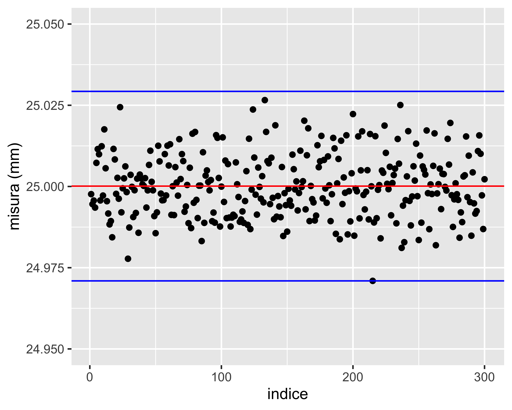
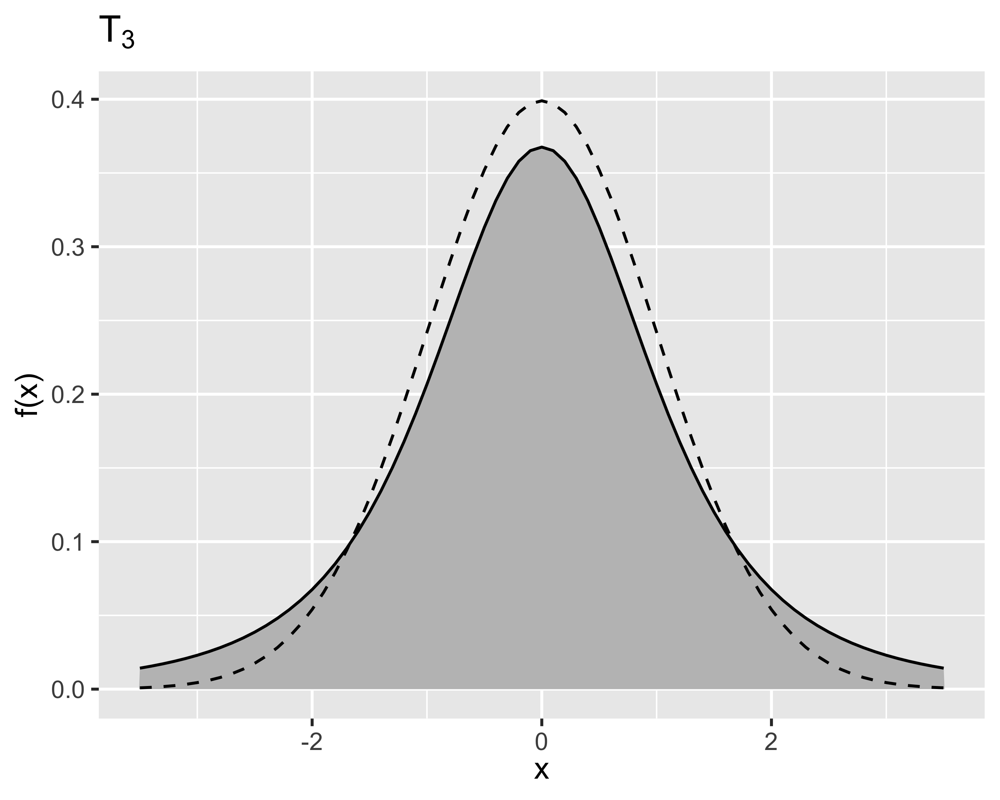
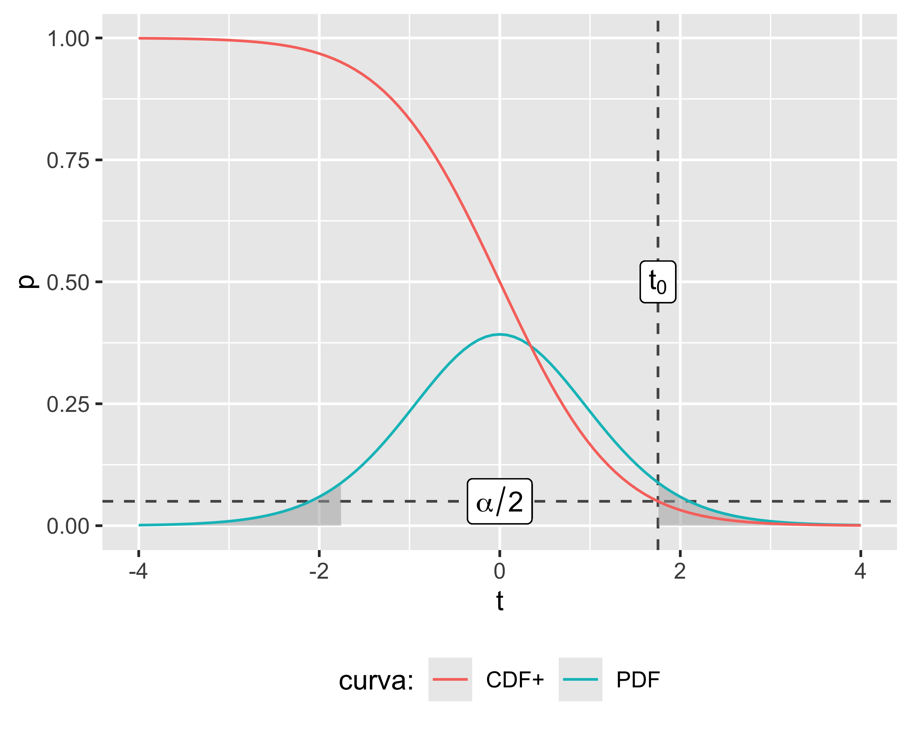

Statistica Descrittiva e Inferenziale
Analisi Dati e Statistica, 2025–26

Paolo Bosetti
Università di Trento, Dipartimento di Ingegneria Industriale
Ultimo aggiornamento: 01/10/2025
Statistica descrittiva
La Statistica Descrittiva serve a descrivere il comportamento di variabili aleatorie
Variabili aleatorie (o stocastiche)
Una variabile stocastica è una variabile che assume valori casuali ad ogni osservazione, cioè tali per cui non è possibile prevedere il valore esatto della prossima osservazione, nemmeno conoscendo le osservazioni precedenti
La misurazione è il processo che porta alla valutazione oggettiva del misurando. Il risultato di una misurazione è chiamato misura
Le variabili stocastiche sono di particolare interesse per l’ingegneria e per l’industria in genere, dato che ogni misurazione produce, come risultato, un valore che ha un contenuto casuale ed è quindi rappresentabile come una variabile stocastica
A sua volta, il contributo casuale ad una misura è chiamato incertezza
Dato che ogni attività produttiva è indissolubilmente legata a delle misurazioni, è quindi evidente quanto sia fondamentale trattare in maniera coerente e robusta i contributi casuali alle misure
Effetto scala
Effetto scala
Effetto scala
In altre parole, la componente stocastica di una misura è affetta da un effetto scala: tanto più grande è il rapporto tra il valore medio misurato e la variabilità tipica dello strumento (cioè la sua precisione), tanto meno sarà apprezzabile l’effetto di casualitÃ
È quindi essenziale definire in maniera precisa ed efficace concetti intuitivi come variabilità e valore medio che abbiamo sopra espresso
Popolazioni
In statistica, una popolazione è un insieme di valori, oggetti o eventi di interesse per una qualche analisi o esperimento.
Per studiare la statura dei residenti nella città di Trento, la popolazione di interesse è l’intero insieme degli abitanti di Trento.
Per studiare il comportamento meccanico della lega d’Alluminio prodotta da un certo impianto, la popolazione di interesse può essere l’intera quantità di lega prodotta da un certo lotto di materia prima
Ma per studiare anche gli effetti di variabilità delle materie prime (tra un lotto e l’altro), delle condizioni ambientali, ecc., sarebbe più opportuno definire come popolazione un insieme più ampio
Quindi spesso la definizione della popolazione di interesse è arbitraria
Popolazioni
Quindi:
la definizione della popolazione dipende dall’obiettivo dell’analisi
la dimensione di una popolazione è generalmente molto ampia e potenzialmente non limitata
di conseguenza è spesso impraticabile considerare l’intera popolazione
si lavora quindi su sottoinsiemi estratti casualmente dalla popolazione, chiamati campioni
essendo estratti casualmente, i campioni approssimano la popolazione, tanto meglio quanto più sono numerosi
Popolazione
Osservando una popolazione possiamo identificare un valore centrale e una variabilitÃ
Momenti di una popolazione
Il valore centrale è chiamato valore atteso e la variabilità è chiamata varianza
Valore atteso:
per v.a. discrete: \(\mu = E(x) := \sum_{i = 1}^N x_i p(x_i)\)
per v.a. continue: \(\mu = E(x) := \int_{-\infty}^{+\infty} x f(x)~\mathrm{d}x\)
Varianza:
- per v.a. discrete: \(\sigma^2 = V(x) := \sum_{i = 1}^N (x_i -\mu)^2 p(x_i)\)
- per v.a. continue: \(\sigma^2 = V(x) := \int_{-\infty}^{+\infty} (x - \mu)^2 f(x)~\mathrm{d}x\)
dove \(E()\) e \(V()\) sono gli operatori valore atteso e varianza, rispettivamente; \(x_i\) (e \(x\)) è la generica osservazione della v.a., e \(p(x_i)\) e \(f(x)\) sono la probabilità e la densità di probabilità di riscontrare un dato valore
Le proprietà di una popolazione si indicano con lettere greche: \(\mu\) e \(\sigma^2\)
NOTA: Risulta \(\sigma^2 = E\left[(x-\mu)^2\right]\)
Probabilità e densità di probabilitÃ
Probabilità (o frequenza): per una v.a. discreta, corrisponde al rapporto tra il numero di osservazioni di un dato valore e il numero totale di osservazioni
Densità di probabilità : per una v.a. continua, la probabilità di riscontrare esattamente un dato valore è nulla, quindi ci si riferisce ad una probabilità di riscontrare un valore all’interno di un dato intervallo. La densità di probabilità è la derivata di tale valore
- Probabilità cumulata (Cumulated Distribution Function): \(p(x_0) = P(x\leq x_0)\)
- Densità di probabilità (Probability Density Function): \(f(x) = \frac{d}{dx} p(x)\)
- Vale anche \(p(x_0) = \int_{-\infty}^{x_0}f(x) \mathrm d x\)
Probabilità e densità di probabilitÃ
Inoltre, si noti che probabilità e frequenza devono sommare a 1: rispettivamente: \[ \begin{array}{l} \sum_i p(x_i) = 1 \\ \int_{-\infty}^\infty f(x)~\mathrm{d}x = 1 \end{array} \]
Questo perché ovviamente la probabilità di riscontrare un qualsiasi valore deve essere certa, cioè 1
Proprietà degli operatori
Gli operatori valore atteso e varianza godono delle seguenti proprietà :
\[ \begin{array}{l} E(c)&=&c\\ E(x)&=&\mu\\ E(cx)&=&cE(x)=c\mu\\ V(c)&=&0\\ V(x)&=&\sigma^2\\ V(cx)&=&c^2V(x)=c^2\sigma^2\\ E(x+y)&=&E(x)+E(y)=\mu_x+\mu_y\\ \mathrm{Cov}(x,y)&=&E[(x-\mu_x)(y-\mu_y)]\\ V(x+y)&=&V(x)+V(y)+2\textrm{ Cov}(x,y)\\ V(x-y)&=&V(x)+V(y)-2\textrm{ Cov}(x,y) \end{array} \]
dove \(c\) indica una costante
Correlazione e covarianza
L’operatore covarianza è un indice di quanto due variabili stocastiche siano interdipendenti
Più utile della covarianza (che non è limitata) è la correlazione che ha il vantaggio di essere compresa nell’intervallo \([-1,1]\):
\[ \mathrm{Corr}(x, y) = \frac{E[(x-\mu_x)(y-\mu_y)]}{\sigma_x\sigma_y} = \frac{\mathrm{Cov}(x,y)}{\sigma_x\sigma_y} \]
- vicina a zero significa nessuna correlazione
- vicina a 1 significa forte correlazione positiva (se aumenta \(x\) aumenta anche \(y\))
- vicina a -1 significa forte correlazione negativa (se aumenta \(x\) diminuisce \(y\)).
Covarianza e correlazione sono anche indicate come \(\sigma_{xy}^2\) e \(\rho_{xy}\), rispettivamente.
Campioni
Una popolazioni può essere eccessivamente numerosa per essere analizzata direttamente
Quindi si analizzano dei sottoinsiemi ottenuti per campionatura, cioè estrazione casuale
L’estrazione casuale di un campione sufficientemente grande non altera le proprietà di distribuzione della popolazione
Da una popolazione di \(N\) elementi è possibile estrarre un numero di campioni di dimensione \(n\) differenti descritto dal coefficiente binomiale: \[\binom{N}{n}=\frac{N!}{(N-n)!n!},~N>n\]
Stimatori
Per ogni proprietà della popolazione è possibile definire uno stimatore, o statistica, costruito sul campione
Si definiscono media e varianza campionarie
\[ \begin{eqnarray} \bar x &=& \frac{1}{n}\sum_{i=1}^n x_i\\ S^2 &=& \frac{\sum_{i=1}^n (x_i - \bar x)^2}{n-1} \end{eqnarray} \]
Un particolare valore assunto da uno stimatore è detto stima
Al posto della varianza \(S^2\) si usa spesso la deviazione standard \(S\) (stesse unità di misura)
Stime
Dato che ogni campione è estratto casualmente, ogni stima è una variabile aleatoria
Più grande è il campione, più la stima si avvicina alla proprietà corrispondente: si ha convergenza in distribuzione

Valore atteso e varianza della media campionaria
Valore atteso della media:
\[ \begin{eqnarray} \mathrm E(\bar x) &=& \mathrm E(\frac{x_1+x_2+\dots+x_n}{n}) = \frac{1}{n}\left[\mathrm E(x_1+x_2+\dots+x_n) \right]\\ &=& \frac{1}{n}\left[\mathrm E(x_1)+\mathrm E(x_2)+\dots+\mathrm E(x_n) \right] = \frac{1}{n} n\mathrm E(x) \\ \mathrm E(\bar x)&=& \mu \end{eqnarray} \]
Varianza della media:
\[ \begin{eqnarray} \mathrm V(\bar x) &=& \mathrm V(\frac{x_1+x_2+\dots+x_n}{n}) = \frac{1}{n^2}\left[\mathrm V(x_1+x_2+\dots+x_n) \right]\\ &=& \frac{1}{n^2}\left[\mathrm V(x_1)+\mathrm V(x_2)+\dots+\mathrm V(x_n) \right] = \frac{n\mathrm V(x)}{n^2} = \frac{\mathrm V(x)}{n} \\ \mathrm V(\bar x) &=& \frac{\sigma^2}{n} \end{eqnarray} \]
Gradi di libertÃ
I gradi di libertà di una statistica (GdF o DoF) sono il numero di elementi indipendenti che compaiono nella sua definizione. Dalla definizione della varianza risulta che
\[ \sigma^2=E\left(\frac{\sum(x_i - \bar x)^2}{n-1}\right)=E\left(\frac{SS}{\nu}\right) \]
Cioè la varianza è il valore atteso della somma quadratica (Sum of Squares) divisa per il suo numero di gradi di libertà \(\nu\), cioè di elementi indipendenti.
Che questi ultimi siano \(n-1\) è dimostrato dalla seguente relazione: \[ \sum_{i=1}^n(x_i-\bar x) = \sum_{i=1}^n(x_i)-n\bar x=:0 \] quindi non tutti gli \(n\) elementi nella definizione di \(SS\) possono essere indipendenti, dato che il valore di uno di essi è prevedibile dai restanti \(n-1\) grazie alla definizione di \(\bar x\)
Qualche domanda
Nota la media di un campione è possibile calcolare la varianza?
- Sì
- No
Covarianza campionaria
Date due v. a. \(x\) e \(y\) di cui si considerano due campioni, sia \(\sigma_{xy}=-7.52\). Allora:
- \(x\) e \(y\) sono fortemente correlate in senso positivo
- \(x\) e \(y\) sono fortemente correlate in senso negativo
- \(x\) e \(y\) sono debolmente correlate
- \(x\) e \(y\) sono di certo anti-correlate
- Non è possibile affermare quanto siano correlate
Varianza della media campionaria
Da una stessa popolazione estraggo una serie di campioni di 16 elementi e una seconda serie di campioni di 64 elementi. Considerando la varianza delle due medie campionarie:
- È uguale per entrambe le serie
- Quella della seconda serie è circa un quarto di quella della prima
- Quella della prima serie è circa il doppio di quella della seconda
- Quella della seconda serie è un quarto di quella della prima
- Quella della prima serie è il doppio di quella della seconda
Distribuzioni
Valore atteso e varianza non sono le uniche due proprietà di una popolazione.
Due popolazioni possono avere gli stessi parametri valore atteso e varianza ma avere forme differenti. La forma di una popolazione si chiama distribuzione
- pop1 mostra la stessa probabilità tra 9 e 31 circa
- pop2 mostra maggiore probabilità attorno a 20 che dirada verso l’alto e verso il basso
- Eppure hanno lo stesso valore atteso e la stessa varianza
Distribuzioni
Distribuzioni discrete

Distribuzioni continue
Distribuzioni discrete
Distribuzione binomiale o di Bernoulli
Un processo di Bernoulli è una serie di \(n\) eventi con risultati \(z_1, z_2, \dots, z_n\) tali per cui:
- gli eventi \(z_i\) sono tutti indipendenti
- ogni \(z_i\) è rappresentabile con 0 o con 1
- la probabilità di successo \(p_s\in[0,1]\) di ciascun evento è costante
La distribuzione binomiale descrive la probabilità di ottenere \(x\in[0, n]\) successi in \(n\) eventi
- Si dice che \(x\sim\mathrm{Binom}(n,p_s)\) o anche \(x\sim\mathcal{B}(n,p_s)\) quando la probabilità è: \[ p(x)=\binom{n}{x}p_s^x(1-p_s)^{n-x},~~~x\in{0,1\dots,n} \]
- Momenti: \[ \mu=np_s,~~~\sigma^2=np_s(1-p_s) \]
- probabilità di ottenere 8 volte testa lanciando 10 volte una moneta

Distribuzione di Poisson
- Probabilità di avere un numero \(x\in\mathbb{N}^+\) di eventi che si verificano successivamente ed indipendentemente in un dato intervallo di tempo (o spazio…)
- Mediamente si verificano \(\lambda\in\mathbb{R}^+\) eventi nello stesso intervallo
- È nota anche come legge degli eventi rari
- Si dice che \(x\sim\mathrm{Poisson}(\lambda)\) oppure \(x\sim\mathcal{P}(\lambda)\) quando la probabilità è: \[ p(x)=\frac{e^{-\lambda}\lambda^x}{x!},~~~\forall x\in\mathbb{N}^+ \]
- Momenti: \[ \mu=\lambda,~~~\sigma^2=\lambda \]
- probabilità di riscontrare un difetto su 1 m di filo, quando ci sono mediamente 9 difetti ogni 100 m
- probabilità di ricevere una telefonata nei prossimi 10’ in un centralino che ne riceve mediamente 250 al giorno
Distribuzione geometrica
È la distribuzione di probabilità di ottenere in un processo di Bernoulli un successo dopo \(x \in \mathbb{N}^+\) fallimenti
- Si dice che \(x\sim\mathrm{Geom}(p_s)\) oppure \(x\sim\mathcal{G}(p_s)\) quando la probabilità è: \[ p(x)=p_s(1-p_s)^{x-1},~~~x \in\mathbb{N}^+ \]
- Momenti: \[ \mu=(1-p_s)/p_s,~~~\sigma^2=(1-p_s)/p_s^2 \]
- La probabilità di ottenere per la prima volta un dato numero dopo \(x\) lanci di un dado a sei facce (\(p_s=1/6\))

Distribuzioni continue
Distribuzione Uniforme
- distribuzione in cui tutti i valori della v.a. hanno la stessa probabilitÃ
- può essere sia discreta che continua
- Si dice \(x\sim\mathcal{U}(a,b)\) quando la PDF è: \[ f(x)=\begin{cases} 1/(b-a),&x\in[a, b] \\ 0,&\textrm{altrimenti} \end{cases} \]
- Momenti: \[ \mu=(b+a)/2,~~~\sigma^2=\frac{(b-a)^2}{12} \]
- Il lancio di un dado a 6 facce (discreta)
- L’estrazione di un numero della tombola (discreta)
- L’angolo di arresto di una ruota in rotazione libera (continua)
Distribuzione normale o gaussiana
- Rappresenta il caso in cui la probabilità di riscontrare valori via via più lontani dal valore atteso decresce asintoticamente a 0
- La probabilità di un qualsiasi valore non è mai nulla
Si dice che \(x\sim\mathrm{Norm}(\mu,\sigma^2)\) oppure \(x\sim\mathcal{N}(\mu,\sigma^2)\) quando la PDF è: \[ f(x) =\frac{1}{\sigma \sqrt{2 \pi}}e^{-\frac{1}{2}\left[\frac{x-\mu}{\sigma}\right]^2} \]
Momenti: coincidono con i due parametri \(\mu\) e \(\sigma^2\)
Se \(x\sim\mathcal{N}(\mu, \sigma^2)\) allora \[ \frac{x-\mu}{\sigma}\sim\mathcal{N}(0,1) \] e la distribuzione \(\mathcal{N}(0,1)\) è detta normale standard.

Teorema del limite centrale (enunciato)
Teorema
Se \(x_1, x_2, \dots,x_n\) sono \(n\) variabili aleatorie indipendenti e identicamente distribuite (IID) con \(E(x_i)=\mu\) e \(V(x_i)=\sigma^2~~\forall i=1,2,\dots,n\) (entrambi finiti), e \(y=x_1+x_2+\dots+x_n\), allora: \[ z_n=\frac{y-n\mu}{\sqrt{n\sigma^2}} \] approssima una distribuzione \(\mathcal{N}(0,1)\), nel senso che se \(F_n(z)\) è la funzione di distribuzione di \(z_n\) e \(\Phi(z)\) è la funzione di distribuzione di \(\mathcal{N}(0,1)\), allora: \[ \lim_{n\rightarrow+\infty}\frac{F_n(z)}{\Phi(z)}=1 \]
Teorema del limite centrale (significato)
- Fondamentale nel campo delle misure:
- una misura è somma di una serie di eventi
- ogni evento può avere una distribuzione ignota
- sommando molte distribuzioni il risultato converge alla normale
- quindi il risultato di una misura è spesso normale
- La convergenza è spesso molto rapida (una decina di elementi)
- Nota: sommando o moltiplicando una distribuzione per una costante cambiano i suoi momenti ma la distribuzione rimane la stessa. Invece, operazioni tra v.a. cambiano la distribuzione risultante!
Distribuzione Chi-quadro
- È la distribuzione di una somma di distribuzioni normali standard
- Cioè, sia \(x = z_1^2+z_2^2+\dots+z_k^2\), con \(z_i\sim\mathcal{N}(0,1)~~\forall i=1, 2, \dots,k\), allora la distribuzione di \(x\) è una Chi-quadro
- Il numero di normali sommate \(k\) è il numero di gradi di libertà della distribuzione
- Si dice che \(x\sim\chi^2_k\) quando la PDF è: \[ f(x)=\frac{1}{2^{k/2}\Gamma(k/2)}x^{k/2-1}e^{-y/2} \]
- Momenti: \[ \mu=k,~~~\sigma^2=2k \]
Considerando la somma quadratica di un campione di \(k\) elementi \(y_i\), ciascuno proveniente da una distribuzione \(\mathcal{N}(\mu, \sigma^2)\), risulta che: \[ \frac{(y_i-\bar y)}{\sigma}\sim \mathcal{N}(0,1)~~\forall i=1,2,\dots,k \] e quindi: \[ \frac{\mathit{SS}}{\sigma^2}=\frac{\sum_{i=1}^k(y_i-\bar y)^2}{\sigma^2} \sim \mathcal{X}^2_{k-1} \]
Distribuzione T di Student
Siano due v.a. \[ z\sim\mathcal{N}(0,1),~x\sim\mathcal{X}^2_k \] allora la loro combinazione \[ x=\frac{z}{\sqrt{x/k}} \] è distribuita come una T di Student
Si dice che \(x\sim\mathrm{T}_k\) oppure \(x\sim\mathcal{T}_k\) quando la PDF è: \[ f(x)=\frac{\Gamma\left((k-1)/2\right)}{\sqrt{k\pi}\Gamma(k/2)}\frac{1}{((x^2/k)+1)^{(k+1)/2}} \]
Momenti: \[ \mu = 0,~~~ \sigma^2=k/(k-2) \]
La T di Student è un caso particolare della \(\mathcal{N}(0,1)\): \[ \lim_{k\rightarrow+\infty}t_k=\mathcal{N}(0,1) \] La convergenza è molto rapida: già per \(k>30\) la differenza tra le due funzioni di distribuzione diventa trascurabile

Distribuzione F di Snedecor
Siano due v.a. \[ x_u\sim\mathcal{X}^2_u,~~~x_v\sim\mathcal{X}^2_v \] e si definisce \(x\) come: \[x=\frac{x_u/u}{x_v/v}\] allora \(x\) è una v.a. distribuita come una F di Snedecor
Si dice che \(x\sim\mathrm{F}_{u,v}\) oppure \(x\sim\mathcal{F}_{u,v}\) quando la PDF è: \[ f(x)=\frac{\Gamma\left(\frac{u+v}{2}\right)\left(\frac{u}{v}\right)^{u/2}x^{(u/2)-1}}{\Gamma\left( \frac{u}{2} \right)\Gamma\left( \frac{v}{2} \right) \left(\frac{u}{v}x+1\right)^{(u+v)/2}} \]
Momenti: \[ \mu = \frac{v}{v-2},~~~\sigma^2=\frac{2v^2(u+v-2)}{u(v-2)^2(v-4)} \]
Funzioni di distribuzione
Una distribuzione è descritta da tre funzioni, tra loro correlate:
- funzione di densità di distribuzione, PDF
- funzione di distribuzione cumulata, CDF, è l’integrale progressivo della PDF: \[ \begin{array}{rcl} \mathrm{CDF}^-(x) &=& \int_{-\infty}^x \mathrm{PDF}(x)~\mathrm{d}x \\ \mathrm{CDF}^+(x) &=& \int^{+\infty}_x \mathrm{PDF}(x)~\mathrm{d}x \end{array} \]
- funzione quantile, è l’inversa della CDF; è definita solo in \([0,1]\)


Qualche domanda
Gioco del lotto
Nel gioco del lotto, la probabilità di vincere giocando sempre gli stessi numeri:
- Aumenta ad ogni estrazione, come predetto dalla distribuzione \(\mathcal{B}\)
- Aumenta ad ogni estrazione, come predetto dalla distribuzione \(\mathcal{P}\)
- Aumenta ad ogni estrazione, come predetto dalla distribuzione \(\mathcal{G}\)
- È costante ad ogni estrazione
PDF e CDF
Quali di queste affermazioni sono corrette:
- Qualsiasi CDF è monotona crescente
- Esistono distribuzioni con PDF definita solo per valori positivi
- Per ogni CDF possono esistere più di una PDF che la generano
- \(\mathrm{PDF}(-x) = -\mathrm{PDF}(x)\)
- \(\mathrm{CDF}^+(x) = \mathrm{CDF}^-(-x)\)
- \(\mathrm{CDF}^+(x) = 1- \mathrm{CDF}^-(x)\)
- Una funzione quantile può avere un dominio illimitato a destra o sinistra
Statistica inferenziale
Studia le operazioni di inferenza, cioè ricavare informazioni sulla popolazione a partire da un suo campione
Ipotesi statistiche
- Si è visto che media e varianza campionaria sono due stimatori e rappresentano delle variabili aleatorie
- Quindi prelevando due campioni da una popolazione le due stime di media e varianza saranno sempre differenti
- Come faccio a sapere se due campioni con media diversa provengono dalla stessa popolazione?
- Posso formulare una coppia di ipotesi alternative: \[ \begin{eqnarray} H_0:~&\mu_1 = \mu_2 \\ H_1:~&\mu_1 \neq \mu_2 \\ \end{eqnarray} \]
Matrice di confusione
Un test di ipotesi può avere due tipi di errore:
- Errore di tipo I: falso positivo, o falso allarme
- Errore di tipo II: falso negativo, o mancato allarme
Lo scopo della statistica inferenziale è associare una probabilità a questi errori
| Ipotesi nulla | vera | falsa |
|---|---|---|
| accettata | OK | Errore tipo II |
| rifiutata | Errore tipo I | OK |
La probabilità di un Errore di tipo I è \(\alpha\), la probabilità di un Errore di tipo II è \(\beta\).
Il valore \(1-\beta\) è la potenza \(P\) del test
Test di Student

- William S. Gosset, detto Student, mastro birraio Guinness a Dublino, ~1900
- Problema: come capire se due medie diverse su campioni di processo indicano due diversi processi?
- Siano i due campioni normali e indipendenti \(y_{1,i},~i=1, 2, \dots, n_1\) e \(y_{2,i},~i=1, 2, \dots, n_2\), sarà ovviamente \(\bar{y_1}\neq\bar{y_2}\), quindi come faccio a capire se vale \(H_0\) o \(H_1\)?
Ovviamente la risposta è probabilistica: posso solo associare una probabilità d’errore \(\alpha\) al test di ipotesi \[ \begin{eqnarray} H_0:~&\mu_1 = \mu_2 \\ H_1:~&\mu_1 \neq \mu_2 \\ \end{eqnarray} \]
Test di Student
- I campioni C1 e C3 non avranno valori comuni: è molto probabile che vengano da popolazioni differenti
- I campioni C1 e C2 invece sono più difficili da distinguere
- Intuitivamente, \(H_1\) è tanto più probabile quanto più le medie sono distanti e le varianze strette
Test di Student
Per i due campioni \(y_{1,i}\) e \(y_{2,i}\) è possibile definire la variabile: \[ t_0 = \frac{\bar{y_2} - \bar{y_1}}{S_p\sqrt{\frac{1}{n_1} + \frac{1}{n_2} }} \] dove \(S_p^2\) è chiamata varianza comune (pooled variance) e vale: \[ S_p^2 = \frac{(n_1-1)S_1^2 + (n_2-1)S_2^2}{n_1+n_2-2} \] La \(t_0\) è il rapporto tra una v.a. normale al numeratore e una v.a. \(\chi^2\) al denominatore. Di conseguenza è essa stessa una v.a. ed è definita come una T di Student.
Il numero di gradi di libertà è lo stesso della \(\chi^2\) ed è \(n_1+n_2-2\)
\(t_0\) è detta statistica di test e vale che \(t_0\sim t_{n_1+n_2-2}\)
Test di Student
È evidente che casi come C1 vs. C3 nel grafico precedente avranno un valore di \(|t_0|\) più alto che casi come C1 vs. C2 (rapporto tra distanza e varianza)
Ma data una coppia di campioni provenienti dalla stessa popolazione la probabilità di valori elevati di \(|t_0|\) è molto bassa
Dato che conosciamo la distribuzione di \(t_0\) possiamo quindi calcolare la probabilità di riscontrare un dato valore assumendo che valga \(H_0\)
In altre parole, la probabilità di sbagliare rifiutando \(H_0\) quando essa è vera è pari alla probabilità di riscontrare un valore pari o superiore a \(t_0\) nella distribuzione di Student
In realtà , il segno di \(t_0\) è arbitrario, quindi bisogna verificare la probabilità di riscontrare un valore esterno all’intervallo \([-|t_0|, |t_0|]\)
Test di Student
In definitiva, la probabilità di un errore di tipo I nel test di Student risulta: \[ p\mathrm{-value} = 2\mathrm{CDF}^+_t(|t_0|,n_1+n_2-2) \] dove \(\mathrm{CDF}^{+}_{t}\) è la distribuzione cumulata, coda alta, di una T di Student con \(n_1+n_2-2\) g.d.l, e dove il fattore 2 tiene in considerazione l’ultimo punto della pagina precedente
La probabilità d’errore di un qualunque test statistico è chiamata p-value
- Più piccolo è il p-value, più siamo spinti a rifiutare \(H_0\)
- Tipicamente, si tende a rifiutare \(H_0\) quando il p-value diventa minore del 5%
Test di Student
Spesso nei test statistici si accetta o rifiuta \(H_0\) sulla base di una soglia di probabilità d’errore di tipo I, indicata con \(\alpha\)
- Si fissa un \(\alpha\) a priori in funzione del rischio associato al test
- Si calcola il valore di \(t_{0,\mathrm{max}}\) che corrisponde a \(\alpha\)
- Se risulta \(|t_0| \geq t_{0,\mathrm{max}}\) si rifiuta \(H_0\) con una probabilità d’errore minore di \(\alpha\)
Il valore di soglia si calcola mediante la funzione quantile e si rifiuta \(H_0\) quando: \[ |t_0| \geq t_{0,\mathrm{max}} = t_{\alpha/2, n_1+n_2-2} \] dove \(t_{\alpha/2, n_1+n_2-2}\) è appunto la funzione quantile, coda alta, della T di Student valutata per la probabilità \(\alpha/2\) e per \(n_1+n_2-2\) g.d.l.
Test di Student

Note:
- L’ordinata della \(\mathrm{CDF}^+\) in \(t_0\) è uguale all’area sottesa dalla \(\mathrm{PDF}\) in \([t_0, +\infty)\) (in grigio)
- Il segno del numeratore in \(t_0\) è arbitrario, quindi \(\mathrm{CDF}^+(t_0)\) è la metà della probabilità d’errore di tipo I complessiva, cioè \(\alpha/2\)
Tabella dei quantili
In assenza dei calcolatori, il Test di Student veniva effettuato predeterminando \(\alpha\) e decidendo se rifiutare \(H_0\) sulla base della tabella dei quantili:
| dof | 0.1 | 0.05 | 0.025 | 0.01 | 0.005 | 0.0025 | 0.001 |
|---|---|---|---|---|---|---|---|
| 1 | 3.078 | 6.314 | 12.706 | 31.821 | 63.657 | 127.321 | 318.309 |
| 2 | 1.886 | 2.920 | 4.303 | 6.965 | 9.925 | 14.089 | 22.327 |
| 3 | 1.638 | 2.353 | 3.182 | 4.541 | 5.841 | 7.453 | 10.215 |
| 4 | 1.533 | 2.132 | 2.776 | 3.747 | 4.604 | 5.598 | 7.173 |
| 5 | 1.476 | 2.015 | 2.571 | 3.365 | 4.032 | 4.773 | 5.893 |
| 6 | 1.440 | 1.943 | 2.447 | 3.143 | 3.707 | 4.317 | 5.208 |
| 7 | 1.415 | 1.895 | 2.365 | 2.998 | 3.499 | 4.029 | 4.785 |
| 8 | 1.397 | 1.860 | 2.306 | 2.896 | 3.355 | 3.833 | 4.501 |
| 9 | 1.383 | 1.833 | 2.262 | 2.821 | 3.250 | 3.690 | 4.297 |
| 10 | 1.372 | 1.812 | 2.228 | 2.764 | 3.169 | 3.581 | 4.144 |
| dof | 0.1 | 0.05 | 0.025 | 0.01 | 0.005 | 0.0025 | 0.001 |
|---|---|---|---|---|---|---|---|
| 11 | 1.363 | 1.796 | 2.201 | 2.718 | 3.106 | 3.497 | 4.025 |
| 12 | 1.356 | 1.782 | 2.179 | 2.681 | 3.055 | 3.428 | 3.930 |
| 13 | 1.350 | 1.771 | 2.160 | 2.650 | 3.012 | 3.372 | 3.852 |
| 14 | 1.345 | 1.761 | 2.145 | 2.624 | 2.977 | 3.326 | 3.787 |
| 15 | 1.341 | 1.753 | 2.131 | 2.602 | 2.947 | 3.286 | 3.733 |
| 16 | 1.337 | 1.746 | 2.120 | 2.583 | 2.921 | 3.252 | 3.686 |
| 17 | 1.333 | 1.740 | 2.110 | 2.567 | 2.898 | 3.222 | 3.646 |
| 18 | 1.330 | 1.734 | 2.101 | 2.552 | 2.878 | 3.197 | 3.610 |
| 19 | 1.328 | 1.729 | 2.093 | 2.539 | 2.861 | 3.174 | 3.579 |
| 20 | 1.325 | 1.725 | 2.086 | 2.528 | 2.845 | 3.153 | 3.552 |
Ad esempio, per un campione con 8 g.d.l. e \(\alpha=0.1\) risulta un valore critico di \(t_0=1.86\): ogni valore di \(t_0\) calcolato superiore a tale valore (in modulo) comporta il rifiuto di \(H_0\) con una probabilità d’errore inferiore al 10%
Varianti del test di Student
Il test di Student sopra visto vale per il caso più generico. Esistono varianti del test per le seguenti condizioni, che possono combinarsi per dare luogo a 4 diversi test:
- test a uno o due campioni
- test a uno o due lati (in \(H_1\) la disuguaglianza è sostituita con un \(>\) o un \(<\))
Inoltre, nel caso di test a due campioni è possibile assumere che i campioni siano omoschedastici oppure no
Varianti del test di Student
- Test a un campione:
\[ \begin{eqnarray} H_0:~& \mu = \mu_0 \\ H_1:~& \mu \neq \mu_0 \end{eqnarray} \]
\[ t_0 = \frac{\mu_0 - \bar y}{S/\sqrt{n}} \]
- Test a un lato:
\[ \begin{eqnarray} H_0:~& \mu_1 = \mu_2 \\ H_1:~& \mu_1 \gtrless \mu_2 \end{eqnarray} \]
\[ \begin{eqnarray} t_0 &\gtrless& \pm t_{\alpha, k} \\ p\textrm{-value} &=& CDF_t^{\pm}(t_0, k) \end{eqnarray} \]
Nota: il test a un lato, a pari valore di \(t_0\), ha una soglia di rifiuto di \(H_0\) più bassa, ed è quindi più potente
OmoschedasticitÃ
Il test a due campioni sopra visto assume che i due campioni siano omoschedastici. Se non lo sono, è necessario rivedere la definizione di \(t_0\) come segue (Test di Welch): \[ t_0 = \frac{\bar{y_1} - \bar{y_2}}{\sqrt{S_1^2/n_1 + S_2^2/n_2}};~~~\nu=\frac{(S_1^2/n_1 + S_2^2/n_2)^2}{\frac{(S_1^2/n_1)^2}{n_1-1}+\frac{(S_2^2/n_2)^2}{n_2-1}} \] L’ipotesi di omoschedasticità va preliminarmente verificata con un test della varianza: \[ \begin{eqnarray} H_0 :~& \sigma^2_1 = \sigma^2_2 \\ H_1 :~& \sigma^2_1 \neq \sigma^2_2 \end{eqnarray},~~~F_0=\frac{S^2_1}{S^2_2}\sim\mathcal{F}_{n_1-1, n_2-1} \] Cioè se il p-value associato a \(F_0\) è piccolo, si assume che i campioni non siano omoschedastici e quindi si effettua il test di Welch; altrimenti vale il test di Student
Il test di Student accoppiato
Nel caso di test di Student a due campioni, quando essi hanno la stessa dimensione e sono raccolti due a due in condizioni molto simili, è opportuno accoppiarli e effettuare il test di Student accoppiato
Ogni misura è esprimibile come: \[ y_{ij}=\mu_i+\beta_j+\varepsilon_{ij};\hspace{9pt} \left\{ \begin{array}{l}i=1,2\\j=1,2,\dots ,n\end{array} \right. \] Se definisco \(d_j=y_{1j} - y_{2j}\), ricordando le proprietà dell’operatore \(E(\cdot)\), risulta \(\mu_d = \mu_1 - \mu_2\). Quindi posso riformulare una coppia di ipotesi equivalenti: \[ \begin{eqnarray} H_0 :~& \mu_d = 0 \\ H_1 :~& \mu_d \neq 0 \end{eqnarray} \] Quindi il test accoppiato è un test a un campione, con il vantaggio che gli effetti casuali tra coppie di osservazioni non influiscono sul risultato del test
L’intervallo di confidenza
Dato parametro ignoto \(\vartheta\), vogliamo definire due statistiche \(\color{darkred}{L}\) e \(\color{green}{U}\), tali per cui la probabilità : \(P(\color{darkred}L\color{darkblue}\leq\vartheta\leq \color{green}U\color{darkblue})= 1-\alpha\). In questo caso l’intervallo \([L,U]\) è detto intervallo di confidenza per il parametro \(\vartheta\).
Consideriamo un T-test ad un campione. Sappiamo che: \[ t_0=\frac{\bar x - \mu}{S/\sqrt{n}}\sim t_{n-1} \] Se \(c\) è \(t_{\alpha/2, n-1}\), allora, per definizione: \(P(-c\leq t_0\leq c) = 1-\alpha\)
Sostituendo \(t_0\) otteniamo: \[ P(\color{darkred}{\bar x - cS/\sqrt{n}}\color{darkblue} \leq \mu \leq \color{green}\bar x + cS/\sqrt{n}\color{darkblue}) = 1-\alpha \]
Intervallo di confidenza
In pratica, significa che il valore atteso della popolazione (che è ignoto!) ha la probabilità \(1-\alpha\) di ricadere nell’intervallo \([\bar x - cS/\sqrt{n}, \bar x + cS/\sqrt{n}]\), detto di confidenza
Se il \(\mu_0\) del corrispondente test sta al di fuori dell’intervallo di confidenza, allora possiamo rifiutare \(H_0\) con un errore inferiore a \(\alpha\).
Per un test a due campioni risulta: \[ P\left( -t_{\alpha/2,n_1+n_2-2}\leqslant\frac{(\bar y_1-\bar y_2)-(\mu_1-\mu_2)}{S_p\sqrt{\frac{1}{n_1}+\frac{1}{n_2}}}\leqslant t_{\alpha/2,n_1+n_2-2} \right)=1-\alpha \] Quindi l’intervallo di confidenza \([L,U]\) è definito da: \[ \left[(\bar y_1-\bar y_2)-t_{\alpha/2,n_1+n_2-2}S_p\sqrt{\frac{1}{n_1}+\frac{1}{n_2}},~ (\bar y_1-\bar y_2)+t_{\alpha/2,n_1+n_2-2}S_p\sqrt{\frac{1}{n_1}+\frac{1}{n_2}}~\right] \]
Potenza del test di Student
La potenza di un test statistico è la probabilità di rifiutare l’ipotesi nulla quando essa è falsa, cioè \(1-\beta\). È l’affidabilità del test. Essa dipende ovviamente dalla dimensione dei campioni. È possibile calcolare le curve di potenza per diverse dimensioni dei campioni e per diverse dimensioni di dello scarto relativo \(\delta =(\mu_1 - \mu_2) / \sigma\).

- La potenza del test diminuisce con la differenza tra le medie
- La potenza del test aumenta con la dimensione dei campioni
- La potenza del test aumenta con \(\alpha\)
- Con \(\alpha=0.05\) e \(n=10\), la potenza del test è \(\geq0.9\) per \(\delta\geq1.5\)
Qualche domanda
Test di Student
Ho due campioni di dati, uno con \(n_1=10\), \(\bar y_1 = 13.59213\), \(S_1=4.33921\) e l’altro con \(n_2=10\), \(\bar y_2 = 10.30381\), \(S_2=2.24028\). Voglio confrontare le medie dei due campioni con un test di Student, assumendo \(\alpha=0.05\):
- \(\mu_1\neq\mu_2\), con un \(p\)-value pari a 0.0473
- \(\mu_1 = \mu_2\), con un \(p\)-value pari a 0.0522
- \(\mu_1\neq \mu_2\), con un \(p\)-value pari a 0.0623
- \(\mu_1 = \mu_2\), con un \(p\)-value pari a 1.39E-4
- \(\mu_1\neq \mu_2\), con un \(p\)-value pari a 0.0487
Calcolatrice
Usare il riquadro sottostante per risolvere l’esercizio precedente (provare anche con la tabella dei quantili)
Nota: la radice quadrata si ottiene con sqrt(x), l’elevamento a potenza con x^y.
Anomalie
La raccolta dei dati relativi ad un campione può essere affetta da errori:
- nell’operazione di misura
- nell’operazione di trascrittura del dato
Questi errori ovviamente hanno un’elevata probabilità di non concordare con il resto dei dati, cioè di essere troppo lontani dalla media in rapporto alla varianza tipica del processo.
Questi errori sono chiamati anomalie ed è buona norma identificarli ed eliminarli immediatamente dopo aver concluso la raccolta dei dati
Anomalie: metodo grafico
Il più comune metodo grafico per individuare le anomalie è il box-plot
- il box va dal primo al terzo quartile (metà dei dati)
- la linea nel box è la mediana
- i baffi vanno dal minimo al punto più lontano ma non oltre 1.5 volte l’interquartile
- i punti oltre i baffi sono possibili anomalie
Anomalie: test statistici
Non è un vero test ma un criterio in base al quale eliminare il punto più lontano dalla media (uno solo!)
Dati \(\left<x_1, x_2,\dots,x_n\right>\) con distribuzione normale, si calcola la massima differenza assoluta \(s_0=\underset{i=1,\dots,n}{\max}\left(\frac{|x_i - \bar x|}{S_x}\right)\)
Per via della normalità degli \(x_i\) è evidente che \(|x_i-\bar x|/S_x\sim\mathcal{N}(0,1)\). Possiamo quindi calcolare la probabilità di un valore maggiore o uguale a \(s_0\) dalla funzione di ripartizione, coda superiore: \[ P_s=\mathrm{CDF}_{\mathcal{N}}^+(s_0) \] Su \(n\) osservazioni normali ci aspettiamo \(nP_s\) valori più grandi di \(s_0\). Quindi, se risulta \(nP_s < 0.5\), mentre noi abbiamo un punto sospetto, allora possiamo scartare l’anomalia
Il test di Grubb è un vero e proprio test statistico, basato su una coppia di ipotesi (\(H_1\) porta allo scarto della sospetta anomalia), su una statistica di test e sul calcolo di un p-value.
In breve: \[ \begin{eqnarray} G_0 &=& \frac{\underset{i=1,\dots,n}{\max}|y_i-\bar y|}{S_x}\\ G_0 &>& \frac{n-1}{n}\sqrt{\frac{t^2_{\alpha/(2n),n-2}}{n-2+t^2_{\alpha/(2n),n-2}}} \Rightarrow \neg H_0 \end{eqnarray} \]
Analisi di normalitÃ
I test visti fin qui assumono sempre che i campioni su cui si opera derivino da una distribuzione normale, per quanto a parametri incogniti
Prima di effettuare un qualsiasi test, quindi, è necessario verificare l’ipotesi di normalitÃ
Come per l’analisi delle anomalie, anche in questo caso è possibile utilizzare sia metodi grafici che test statistici
In generale, i test statistici sono sempre preferibili, perché
- sono meno soggetti a interpretazione personale
- consentono l’automazione della scelta all’interno di algoritmi
Analisi di normalità : istogramma

Per il numero di canne, o bin, si usa la formula di Sturges: \(K = \lceil\log_2 n \rceil + 1\) o la formula di Scott: \(h=3.49 s / \sqrt[3]{n}\) (\(h\) è l’ampiezza della canna)
Sturges e Scott

Analisi di normalità : grafico quantile-quantile
Tabella campionaria:
| i | x | f | q |
|---|---|---|---|
| 1 | -1.540 | 0.061 | -1.547 |
| 2 | -0.929 | 0.159 | -1.000 |
| 3 | -0.326 | 0.256 | -0.655 |
| 4 | -0.295 | 0.354 | -0.375 |
| 5 | -0.006 | 0.451 | -0.123 |
| 6 | 0.415 | 0.549 | 0.123 |
| 7 | 1.263 | 0.646 | 0.375 |
| 8 | 1.272 | 0.744 | 0.655 |
| 9 | 1.330 | 0.841 | 1.000 |
| 10 | 2.405 | 0.939 | 1.547 |

La colonna x sono le osservazioni ordinate; la ripartizione dei punti, colonna f, è corretta con la formula di Bloom: \(f=(1-3/8)/(n+1-3/4)\); la colonna q rappresenta i quantili normali standard di f.
La diagonale sul grafico passa per i due punti del primo e terzo quartile
Analisi di normalità : grafico quantile-quantile
Analisi di normalità : test del Chi-Quadro
È un test statistico per verificare l’ipotesi nulla che un dato campione provenga da una data (a scelta!) distribuzione
Raggruppiamo \(\left<x_1, x_2, \dots, x_n\right>\) in \(k\) classi, t.c ogni classe abbia almeno 4–5 elementi. La largezza di ciascun intervallo può essere diversa
Sia \(O_i,~i=1,2,\dots,k\) il numero di osservazioni in ogni classe, e \(E_i\) il numero di osservazioni attese (expected) in ogni classe per la distribuzione ipotizzata
Le differenze tra \(O_i\) e \(E_i\) saranno tanti più grandi quanto più varrà \(H_1\). Quindi si definisce la statistica di test:
\[ X_0^2 = \sum_{i=1}^k \frac{(O_i-E_i)^2}{E_i} \sim \chi_{k-p-1}^2 \] dove \(p\) è il numero di parametri della distribuzione ipotizzata (2 per la normale)
Analisi di normalità : test di Shapiro-Wilk
Tra i test di normalità è quello con la potenza maggiore per un dato livello di significativitÃ
La statistica di test è basata su una distribuzione anonima e nota solo numericamente
Per campioni sufficientemente grandi, il test è così potente da evidenziare anche piccole deviazioni dalla normalità , dovute ad esempio a anomalie. In questi casi è opportuno accompagnarlo con un grafico Quantile-Quantile per discriminare questi effetti
Verifica di correlazione
- Il T-test vale per campioni normali e indipendentemente distribuiti (IID)
- È necessario verificare questa ipotesi
- Se riporto in un grafico i valori dei due campioni nell’ordine in cui sono stati acquisiti posso osservare correlazione (s1 vs. s3) o mancanza di correlazione (s1 vs. s2)
- È evidente che \(\rho_{s_1s_2}\) sarà vicina a 0, mentre \(\rho_{s_1s_3}\) sarà vicina a 1
Esiste un test di correlazione di Pearson che fornisce un p-value associato all’ipotesi alternativa che i due campioni siano correlati.
Analisi della Varianza
Il Test di Student considera un unico fattore con uno o due livelli.
Cosa succede se abbiamo più di due livelli o più di un fattore?
Fattori
- Un fattore è un parametro che determina il risultato di un processo
- È possibile avere fattori quantitativi o qualitativi
- Fattori quantitativi assumono livelli rappresentabili da numeri reali
- Fattori qualitativi assumono livelli non ordinati e non misurabili
- I livelli di un fattore sono chiamati trattamenti
- Il valore misurato come uscita del processo è chiamato resa (yield)
Esperimenti a un fattore e più livelli
Esempio: resistenza a trazione di un filato in funzione della percentuale di fibre di cotone (fattore quantitativo)
- Ogni trattamento è ripetuto 5 volte
- Il boxplot è utile come orientamento ma per campioni così piccoli l’indicazione delle anomalie non è affidabile
| % Cotone | #1 | #2 | #3 | #4 | #5 |
|---|---|---|---|---|---|
| 15 | 7 | 7 | 15 | 11 | 9 |
| 20 | 12 | 17 | 12 | 18 | 18 |
| 25 | 14 | 18 | 18 | 19 | 19 |
| 30 | 19 | 25 | 22 | 19 | 23 |
| 35 | 7 | 10 | 11 | 15 | 11 |
Esperimenti a un fattore e più livelli
La domanda è: i trattamenti producono variazioni di resa statisticamente significative?
Ogni singolo valore di resa può essere espresso come (modello delle medie): \[ y_{ij}=\mu_i+\varepsilon_{ij},~~\left\{\begin{array}{rcl} i &=& 1, 2, \dots, a \\ j &=& 1, 2, \dots, n \end{array}\right. \] dove \(i\) sono i trattamenti, \(j\) sono le ripetizioni, \(\varepsilon_{ij}\) sono i residui, cioè la componente puramente stocastica e a media nulla della variabile aleatoria \(y_{ij}\), mentre \(\mu_i\) è la componente deterministica
Possiamo separare \(\mu_i = \mu + \tau_i\), dove \(\tau_i\) è il contributo del trattamento alla media complessiva \(\mu\) (modello degli effetti): \[ y_{ij}=\mu + \tau_i+\varepsilon_{ij},~~\left\{\begin{array}{rcl} i &=& 1, 2, \dots, a \\ j &=& 1, 2, \dots, n \end{array}\right. \]
Esperimenti a un fattore e più livelli
- Possiamo sfruttare i modelli precedenti per studiare la significatività del fattore
- Usando il modello delle medie abbiamo la coppia di ipotesi:
\[ \begin{eqnarray} H_0&:&~\mu_1=\mu_2=\dots =\mu_a \\ H_1&:&~\mu_i\neq\mu_j~~~\textrm{per almeno una coppia }(i, j) \end{eqnarray} \]
- Equivalentemente, usando il modello degli effetti:
\[ \begin{eqnarray} H_0&:&~\tau_1=\tau_2=\dots =\tau_a = 0 \\ H_1&:&~\tau_i\neq0~~~\textrm{per almeno un }i \end{eqnarray} \]
- Per sciogliere l’ipotesi dobbiamo formulare una statistica di test appropriata
Decomposizione della varianza
Definizioni:
- Notazione abbreviata per le somme:
\[ \begin{eqnarray} y_{i.}&=&\sum_{j=1}^n y_{ij},~\bar y_{i.}=y_{i.}/n,~i=1, 2, \dots, a \\ y_{..}&=&\sum_{i=1}^a\sum_{j=1}^n y_{ij},~\bar y_{..}=y_{..}/N,~N=na \end{eqnarray} \]
- Introduciamo la somma quadratica totale corretta: \[ \begin{equation} SS_T=\sum_{i=1}^a\sum_{j=1}^n (y_{ij}-\bar y_{..})^2 = (N-1)V(y_{ij}) \end{equation} \]
Decomposizione della varianza
Considerando che: \[ SS_T=\sum_{i=1}^a\sum_{j=1}^n (y_{ij}-\bar y_{..})^2 = \sum_{i=1}^a\sum_{j=1}^n [(\bar y_{i.}-\bar y_{..})+(y_{ij}-\bar y_{i.})]^2 \]
ovvero:
\[ SS_T= n\sum_{i=1}^a(\bar y_{i.}-\bar y_{..})^2 + \sum_{i=1}^a\sum_{j=1}^n (y_{ij}-\bar y_{i.})^2 + 2\sum_{i=1}^a\sum_{j=1}^n(\bar y_{i.}-\bar y_{..})(y_{ij}-\bar y_{i.}) \]
e siccome \(\sum_{j=1}^n (y_{ij}-\bar y_{i.})=y_{i.}-n\bar y_{i.}=0\), ne consegue che la \(SS_T\) può essere decomposta come:
\[ SS_T=\sum_{i=1}^a\sum_{j=1}^n (y_{ij}-\bar y_{..})^2=n\sum_{i=1}^a(\bar y_{i.}-\bar y_{..})^2 + \sum_{i=1}^a\sum_{j=1}^n (y_{ij}-\bar y_{i.})^2=SS_{tr}+SS_E \]
Decomposizione della varianza
Abbiamo decomposto la \(SS_T\) (che è parente stretta della varianza) nelle somme quadratiche medie:
- \(SS_{tr}\), che misura la variabilità tra un trattamento e l’altro
- \(SS_E\), che misura la variabilità all’interno dei trattamenti
Ricordando quanto detto nella definizione della distribuzione \(\mathcal{X}^2\):
\[ \frac{\mathit{SS}}{\sigma^2}=\frac{\sum_{i=1}^n(y_i-\bar y)^2}{\sigma^2} \sim \mathcal{X}^2_{n-1} \]
risulta che:
\[ \sum_{i=1}^{a}\sum_{j=1}^{n}\frac{(y_{ij}-\bar y_{..})^2}{\sigma^2} = \frac{SS_T}{\sigma^2} \sim \chi^2_{N-1},~~~\frac{SS_E}{\sigma^2} \sim \chi^2_{N-a},~~~\frac{SS_{tr}}{\sigma^2} \sim \chi^2_{a-1} \]
Decomposizione della varianza
- Il rapporto tra una somma quadratica e il relativo numero di g.d.l. è uguale alla varianza
- Quindi, se vale \(H_0\) deve essere \(E(SS_{tr}/(a-1)) = E(SS_E/(N-a))\), dato che si tratta del valore atteso di diversi campioni tratti dallo stesso gruppo di osservazioni, tutte provenienti dalla stessa popolazione (\(H_0\) significa che i trattamenti non sono significativi)
- Ma allora possiamo scrivere:
\[ F_0 = \frac{SS_{tr}/(a-1)}{SS_E/(N-a)}=\frac{MS_{tr}}{MS_E} \sim F_{a-1,N-a} \] Dove \(MS_\cdot\) sono dette somme quadratiche medie
Sulla base dell’ultima equazione possiamo calcolare il p-value associato all’ipotesi \(H_1\): per valori piccoli possiamo affermare che almeno un trattamento ha effetto statisticamente significativo
Teorema di Cochran
La definizione di \(F_0\) presuppone che \(MS_{tr}\) e \(MS_E\) siano indipendenti. Dato che sono il risultato della decomposizione di \(SS_T\) in \(SS_{tr}+SS_E\), ciò non è scontato. Vale però il teorema:
Teorema
Siano \(Z_i\sim \mathcal{N}(0,1),~i=1,2,\dots,\nu\) campioni indipendenti, con \(\sum_{i=1}^\nu Z_i^2=Q_1+Q_2+\dots+Q_s\) dove \(s\leqslant \nu\) e \(Q_i\) ha \(\nu_i\) gradi di libertà (\(i=1, 2,\dots,s\)).
Allora, \(Q_1,Q_2,\dots,Q_s\) sono variabili casuali indipendenti distribuite come \(\mathcal{X}^2\) con \(\nu_1,\nu_2,\dots,\nu_s\) gradi di libertà , se e soltanto se \[ \nu=\nu_1+\nu_2+\dots+\nu_s \]
Siccome \((N-a)+(a-1)=(N-1)\), consegue che \(SS_{tr}/\sigma^2\) e \(SS_E/\sigma^2\) sono variabili casuali indipendenti distribuite come \(\mathcal{X}^2_{a-1}\) e \(\mathcal{X}^2_{N-a}\), rispettivamente.
ANOVA (ANalysis Of VAriance)
Tornando all’esempio della resistenza dei filati misti, possiamo applicare la decomposizione della varianza ottenendo:
| Df | Sum Sq | Mean Sq | F value | Pr(>F) | |
|---|---|---|---|---|---|
| Cotton | 4 | 475.76 | 118.94 | 14.75682 | 9.1e-06 |
| Residuals | 20 | 161.20 | 8.06 | NA | NA |
La tabella soprastante è detta tabella ANOVA
Il p-value molto basso ci consente di rifiutare l’ipotesi nulla e affermare che almeno un trattamento ha effetti statisticamente significativi
Non sappiamo comunque quanti e quali trattamenti siano significativi. Per studiare questo aspetto si utilizza il Test di Tukey
Test di Tukey
Il test valuta contemporaneamente tutte le seguenti coppie di ipotesi: \[ \left. \begin{eqnarray} H_0&:&~\mu_i=\mu_j \\ H_1&:&~\mu_i\neq \mu_j \end{eqnarray} \right\} ~~\forall i\neq j \] Per ogni coppia \((i,j),~i\neq j\) si ha la statistica di test: \[ q_{0,ij}=\frac{|\bar y_{i.}-\bar y_{j.}|}{S_{p,ij}\sqrt{2/n}}\sim\mathcal{Q}_{a,k} \] dove \(n\) è la dimensione dei campioni, uguale per tutti, \(a\) è il numero di trattamenti e \(k\) è il numero di gradi di libertà di \(MS_E\), cioè \(N-a=an-a\).
Per ogni coppia si calcola quindi il p-value dalla CDF della distribuzione dell’intervallo studentizzato \(\mathcal{Q}\) e si calcola l’intervallo di confidenza: \[ \bar y_{i.}-\bar y_{j.}-q_{\alpha,a,N-a}\frac{S_{p,ij}}{\sqrt{n}} \leqslant \mu_i-\mu_j \leqslant \bar y_{i.}-\bar y_{j.}+q_{\alpha,a,N-a}\frac{S_{p,ij}}{\sqrt{n}} \]
Test di Tukey
Generalmente, il risultato viene riportato in un grafico come a fianco
Le coppie per cui l’intervallo di confidenza è a cavallo di 0 non hanno differenze significative, e viceversa
Nota: compiere altrettanti test di Student separati aumenterebbe la probabilità d’errore complessivo, che risulterebbe dalla combinazione delle probabilità d’errore dei singoli test

Qualche domanda
Test di Tukey
Se riduco \(\alpha\) da 0.05 a 0.01, cosa succede agli intervalli di confidenza del test di Tukey?
- Si allargano tutti della stessa quantitÃ
- Si allargano tutti, ma in misura diversa
- Si restringono tutti della stessa quantitÃ
- Si restringono tutti, ma in misura diversa
- Rimangono invariati
ANOVA
Nell’esperimento sopra riportato, una tabella ANOVA come la seguente è corretta oppure no?
| Df | Sum Sq | Mean Sq | F value | Pr(>F) | |
|---|---|---|---|---|---|
| Cotton | 1 | 33.62 | 33.62000 | 1.281632 | 0.269261 |
| Residuals | 23 | 603.34 | 26.23217 | NA | NA |
- Sì
- No, la colonna
Dfè sospetta - No, la colonna
Sum Sqè sospetta - No, la colonna
Mean Sqè sospetta - No, la colonna
F valueè sospetta - No, la colonna
Pr(>F)è sospetta
La spiegazione frequentista
L’approccio frequentista è quello che definisce e studia la probabilità a posteriori cioè contando il numero di eventi relativamente al numero totale di osservazioni
Il significato del \(p\)-value
Il significato del \(p\)-value è illustrato con un esempio: si consideri un esperimento in cui si effettuano 1000 test di Student su altrettanti campioni di \(n=15\) elementi, ciascuno con un livello di significatività \(\alpha\) del 5%
Supponiamo che si tratti di test ad un campione, con ipotesi nulla \(\mu = \mu_0\) e ipotesi alternativa \(\mu \neq \mu_0\), e supponiamo che tutti i campioni siano prelevati dalla stessa popolazione con valore atteso \(\mu_0\)
Allora il valore atteso delle predizioni errate (cioè quelle in cui vale \(H_1\)) è 5%
E se cambiamo \(n\)?
Se aumentiamo la dimensione dei campioni da 15 a 50, la probabilità di errore di tipo I rimane sempre la stessa, a pari condizioni
Com’è possibile?
Aumentando la dimensione del campione aumenta la potenza del test, cioè la sua capacità di discriminare anche piccoli differenze. Ma per un certo test, per una certa differenza, il \(p\)-value non dipende dalla dimensione del campione, perché è proprio calcolato compensando l’effetto della dimensione del campione
E per la potenza?
Consideriamo i test in cui l’ipotesi nulla sia
\[ \begin{eqnarray} H_0:~&\mu = \mu_0 + \sigma \\ H_1:~&\mu \neq \mu_0 + \sigma \end{eqnarray} \]
cioè una differenza di un \(\sigma\) dal valore atteso della popolazione
Allora in gran parte dei casi avremo un \(p\)-value piccolo, che ci spinge a rigettare \(H_0\) (Caso A)
Se però passiamo da campioni da 15 elementi a campioni da 30 elementi (Caso B) la potenza del test aumenta sensibilmente, a pari condizioni
paolo.bosetti@unitn.it — https://paolobosetti.quarto.pub/slides/ADAS/